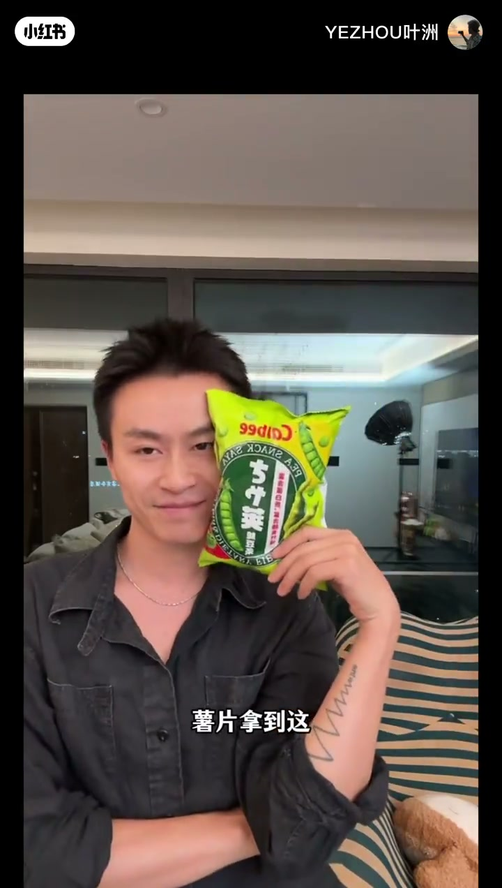
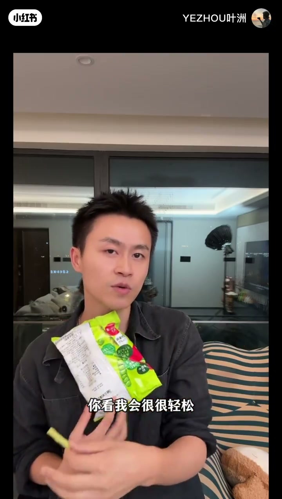
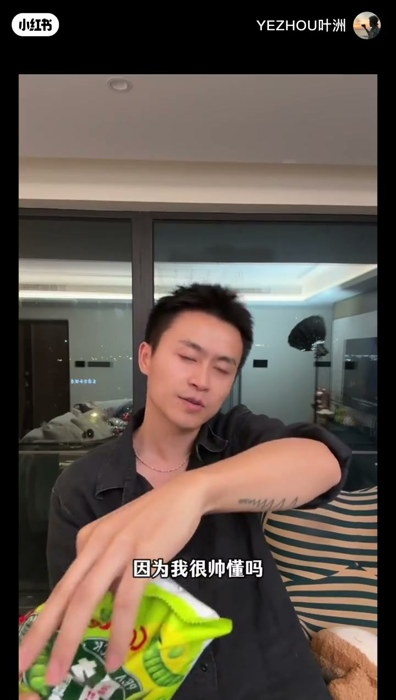
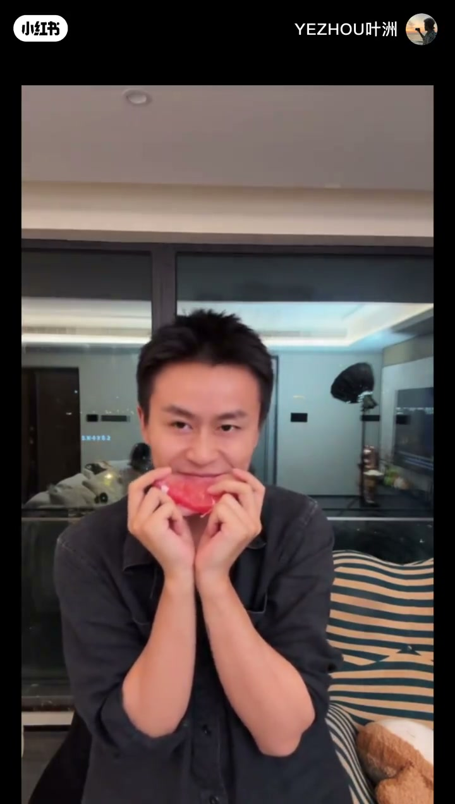
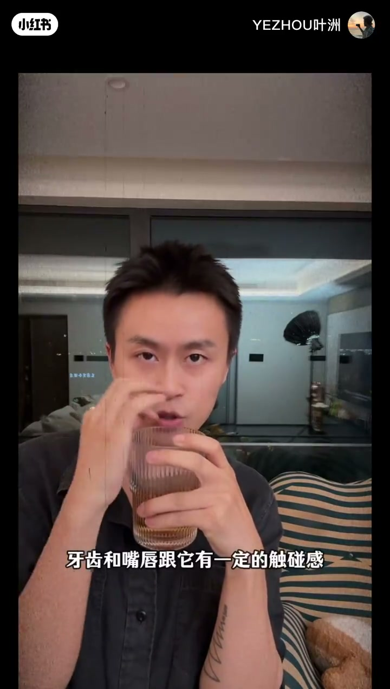
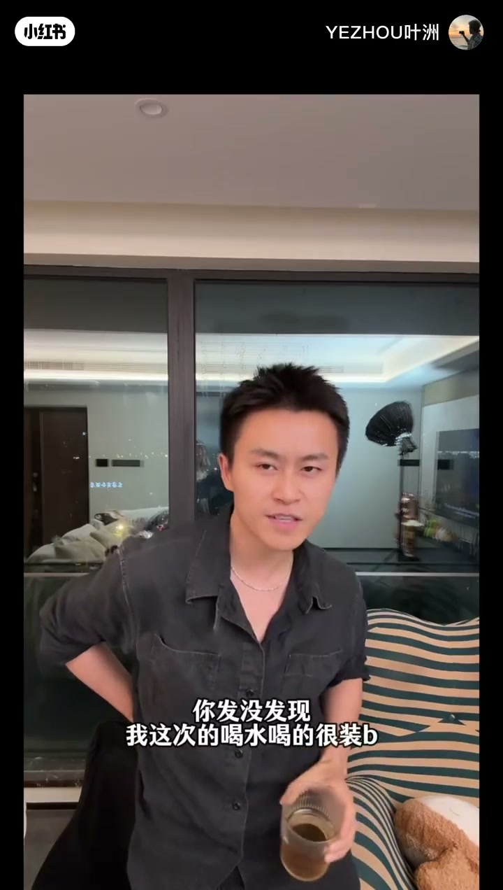

内容要点
这是一段室内口播加现场演示。作者对着镜头讲人像里“引导与姿态”：观众先会想道具放哪，他则先问这个物体能不能撑起一个好看的形态。Whisper 在开场后约一分钟几乎没写下字，画面字幕仍在往下说，正文按字幕补上这段，文末转录只保留识别到的句子。
知识结构
观众的第一反应是袋子该贴脸还是拿在手里。他先给一个很轻松的拿法，再换成不看镜头、拿着却不吃。字幕说：你发没发现这是两种状态。
水果拿在手里很普通。他的第一步不是马上咬或装爱吃，而是问自己能不能有一个特别好的形态：嘴轻轻碰上，大笑也要全身先有状态。
第一种不马上喝，牙齿和嘴唇跟杯沿有触碰，用来给一种极其柔和的状态。第二种端着不喝，视线离开杯子。道具没换，状态换了。
引导来自物体和嘴、手、视线的关系，不来自立刻完成“吃”或“喝”这个动作。风格在他看来不是固定标签：同一杯水，什么都没换，看起来也可以完全不一样。这是作者的现场判断，不是一套可打分的姿态标准。
00:00–01:19
薯片先问放哪，再拆成两种吃法
视频开头他直接说自己要讲姿态，然后随手拿起一袋绿色零食。口播和字幕都把它叫作薯片。包装上的字看不清，正文不猜品牌。开场后大约从第 5 秒到第 1 分钟，Whisper 交了一段空结果，烧录字幕还在继续，下面这段按字幕复述。
字幕先把观众的习惯说出来：当你看到别人拍薯片，第一个念头一定是袋子拿到这儿，或者说拿在这儿，对不对。他举例子，说这些状态是让人吃东西时的随意。第一种吃法的氛围是柔和：他拿着它，会很轻松。大约 48 秒他宣布重点：拿薯片的时候他都不会看你。后面那句“因为我很帅”是他自己的玩笑口吻，不能当成画面事实。接着他拿着不吃。



识别重新跟上大约在 1 分 01 秒。他让人看他咬，又说自己也不会吃进去。字幕在这一拍只写了“我也不会吃进去”。“别累着”只出现在转录里，画面对不上，正文不用。到 1 分 09 秒，字幕和口播合上：你发没发现这是两种状态。他停下来问刚才这个点大家觉得怎么样，觉得可以就继续。场景仍是夜间室内，身后有玻璃和一盏灯架，人一直坐在条纹沙发附近。
01:19–02:14
水果先要形态，大笑要全身有状态
1 分 19 秒他换成水果。原话是：当这个水果我拿在手里，它是很普通的嘛。接着问，如果拍不同的风格，这个水果可以怎么拍。他的第一步明确不是马上跟它做动作，不是“哎吃”，也不是想着拿在这儿怎么样。他只问：我能不能有一个特别好的形态。
例子是先碰在嘴边，嘴巴微碰。然后他问大笑怎么办。答案不是马上让它大笑，而是你拿着东西，它有个状态。他用“哇”带出全身：有状态、饱满、有力量、有肢体的力量，然后再笑。他说这才是你拍这个物体真实的可能性。这里的“真实”是他的拍摄判断，意思是动作要长在已经存在的身体状态上，不是实验室意义上的真实。

大笑那几秒手和果肉在动，定格容易糊，所以配图选在动作落下之后：果肉横在嘴前，脸还留在上面。他没有给这只水果起名字，正文也不另起名字。2 分 08 秒他收束这一段，说今天就是随手，随手拿一个东西就可以给你一个非常棒、而且高级的姿态。“高级”是他的口味评价，视频没有拿别的照片来对照。
02:14–03:16
同一杯水可以很柔，也可以端着不喝
2 分 15 秒他再举一杯很简单的水，让人认真看几种状态。第一种他不会马上去喝。他先把杯子碰到嘴，盯着它。Whisper 听成“听着它”，这一秒的字幕是“碰到盯着它”，正文采用盯着。牙齿和嘴唇跟杯子要有一定的触碰感。杯子不一定要喝，但可以用来给一种极其柔和的状态。

第二种他说我要喝它，看，然后又不喝，就这样端着，盯着这边、盯着那边。到 3 分 02 秒字幕补上口播没写完的半句：我要喝的时候，你发没发现我这次的喝水喝得很装。他用了更粗的口语，正文只保留“装”这个意思：姿态是做出来给人看的，不是自然喝到嘴里。紧接着他问：你有没有发现我同样一杯水，什么都没换。所以你说我是什么风格呢。他自己的回答是：我觉得我没什么特定的风格。

3 分 16 秒之后字幕换成片尾的 YE ZHOU，没有新的动作说明。视频没有交代拍摄参数、镜头焦段或这套说法适合谁。能确定的只有这一间夜里的屋子、这三样随手道具，以及他反复做的对比：同一个东西，换接触和视线，不换物体。